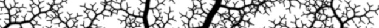
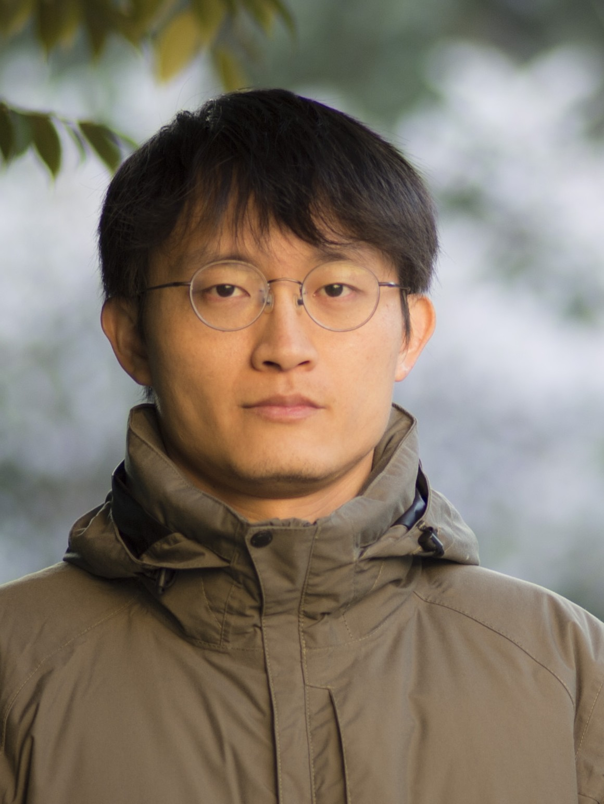
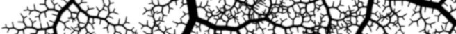

Welcome to my biosketch page. Here you will find information about my background, education, and professional experience. My research focuses on the complex interactions between plants and microbes under stressed conditions, such as exposure to pollutants and physical stress.
Education
- PhD (HKUST), MPhil and MSc (HKBU), BEng (HUST)
Primary work experience
- Associate Professor (Jinan U, China)
- Research Assistant Professor (SUSTech, China)
- PostDoc (HKUST, HKSAR, China)
- Project Assistant (polyU, HKSAR, China)
- Part-time Lecturer (EdUHK, HKMU)
Qualification
- Free Diver Level 3 (International Association for the Development of Apnea, AIDA)
- Rescue SCUBA Diver (Professional Association of Diving Instructors, PADI)
